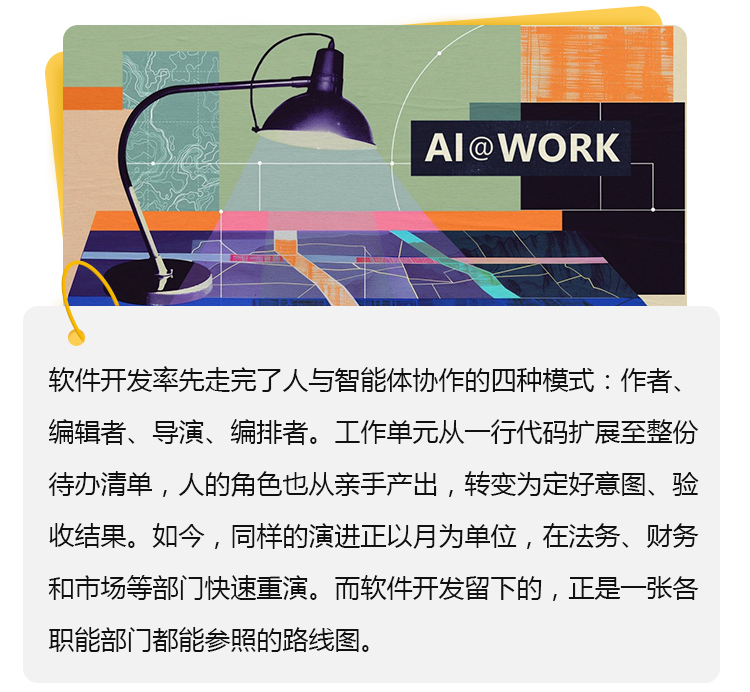
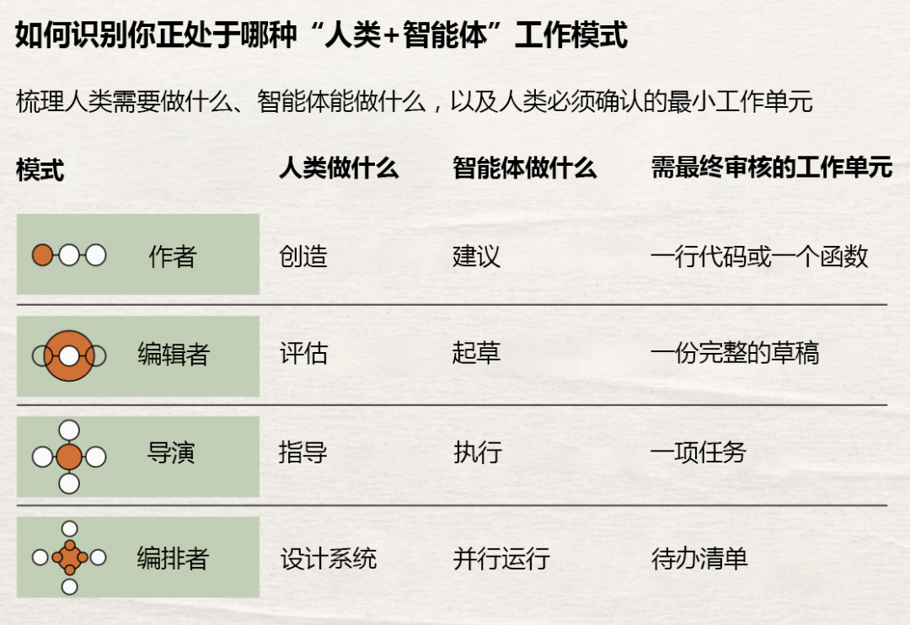
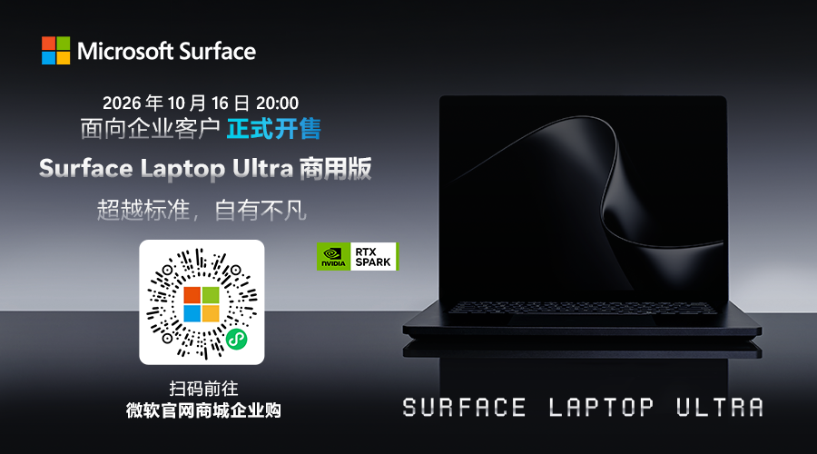
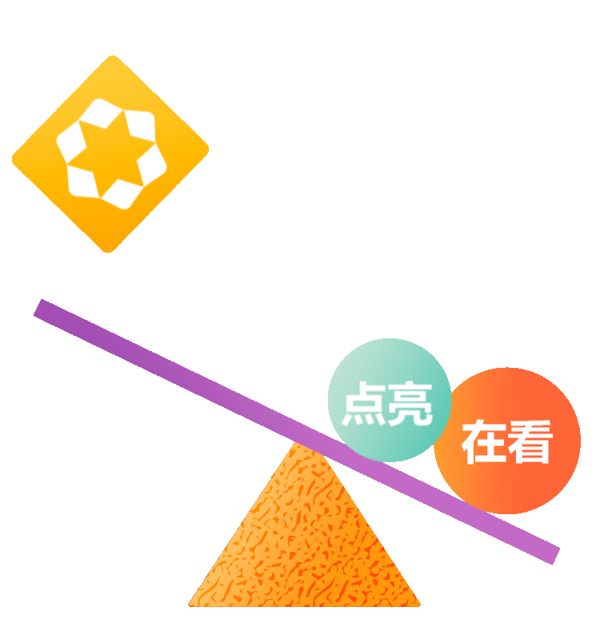

作者：Jared Spataro，
微软公司首席营销官，AI at Work

我们正在经历的这场变革，早已不只是生产力的简单升级，更是工作完成方式的一次重构。最典型的例子就是软件工程，在这个领域，人类与智能体花了大约四年时间，先后经历了四种截然不同的协作模式。而如今，同样的演进过程正在各类知识工作中被压缩到短短几个月之内。
软件开发之所以能率先走到这一步，是因为它的反馈足够密集、足够快速，每一次转变都清晰可见。这些转变所揭示的规律，远不止适用于这一个领域——它实际上为其他知识工作领域提供了一张路线图。
01
人机协作的四种模式
编程并没有从“自动补全”一步跨越到“自主智能体”。后一种模式之所以能够成立，正是因为前一种模式已经存在。而每向前迈进一步，都有两件事在同时发生变化：智能体能做的事，以及人类真正需要负责的事。
01 | 作者模式
使用智能 GitHub Copilot 副驾驶®时，AI 只提示下一行代码，其余部分仍由开发者自己编写。工作单元是一行代码，或一个函数。AI 仅提供建议，而人的职责丝毫未变，那就是“创造”。
02 | 编辑者模式
Cursor Composer 这类工具打开了一层新空间：开发者只需用自然语言说清意图，智能体就能交出完整的草稿。工作单元从一行代码，变成了一项完整的功能，人的职责也随之转移，从写代码变成“看代码”，即审阅、编辑、决定哪些可以交付。
03 | 导演模式
AI 编程智能体展示了这一模式放大后的样子：人写好一份规格说明，将整件事交出去，即可让智能体自己动手：在代码库中通盘规划、执行、跑测试，遇到不符合预期的地方就反复调整、排查到底，工作单元变成了一项任务或一个合并请求。这时，人的角色再次改变：不再需要盯住流程中的每一步，而是转为“定意图、定护栏、定规则，最后验收成品”。部分 AI 企业的自身实践就是例证：公司内部绝大多数代码都由自主智能体编写。
04 | 编排者模式
到了 GitHub Mission Control 等这类工具，一个人就能对着同一份待办清单，同时指挥多个智能体。这些智能体各司其职，并行推进、互相配合，遇到特殊情况再挑出来交给人处理，工作单元变成了待办清单本身。人不再逐项指挥任务，而是转去设计系统、制定规则，判断该在何处介入。杠杆已经不在生产环节，而在判断力上：知道哪些活值得干、先干哪个、干到什么标准算数。

02
同样的转变，
正在越来越多的职能部门中发生
软件开发这项工作，本身就有着严格的约束。代码要么编译得过，要么编译不过，测试要么通过，要么失败。这意味着智能体可以自行检查成果，无需人在旁边，就能从这些信号中学习。也正因为有了这种能力，导演和编排者两种模式才得以成立。少了这一步，把活交出去这件事就走不远。
对于法务、财务、市场等知识工作领域而言，也需要建立对应的这套机制。无论是法务、财务还是市场，总得有人把“什么算好”讲清楚，将其转化为可量化的标准，再搭建一套机制，让智能体能拿这套标准评估自己的产出。
微软《2026年工作趋势指数年度报告》将这件事的分量摆到了台面上。在 AI 使用者中，58% 的人表示自己现在产出的东西，一年前还无法做出来，而在研究中用得最深的前沿专业人士中，这一比例升至 80%。真正卡住的地方，不在人的能力，而在于他们身边的工作有没有被安排成能让人做成事的样子。
03
哪类工作
更该用哪种模式？
这四种模式是一份诊断表，而非一级一级往上爬的台阶。某项工作该放在哪一层，跟它重不重要关系不大，更取决于它被定义得清不清楚。人最少要确认到哪一步？又有哪些环节，人根本不用看？能交给导演或编排者的工作，都有清楚的要求、可量化的好标准，以及一个不必每步都有人盯着的反馈回路。而该留在作者或编辑者这一层的工作，眼下还不具备这些条件。如果在这些条件尚未具备之前就推进，质量问题可能会在系统涉及的各项输出中悄然累积。
哪种模式合适，答案也不是固定的。等技术更成熟，等组织把评估智能体工作的机制做得更好，这条界限就会有所调整，今天该归在编辑者这一层的，一年后可能就该归到导演。被移交出去的工作越多，留给人的那部分也跟着改变——具体干活往后退，定方向、定标准、决定哪些能交出去，这些越来越吃重。组织考核员工、培养员工的方式，也得跟着变。过去因为代码交得快而被看重的工程师，未必就是适合带一队智能体的那个人。
微软的研究发现，65% 的 AI 使用者担心自己适应不够快就会掉队，可只有 13% 的人说，在自我重塑一时没出成果的时候，自己能得到认可。推动 AI 落地的力量，也是拖住它的那股力量。
04
这对管理者意味着什么
推进这一转变的职能部门，通常都会遇上同样两件事。
第一，人得先教会智能体“什么是好”的标准。
在代码里，老师是测试，在别的地方，老师就是人。团队最先部署的智能体，最好挑那些你能说清楚、也能经常给反馈的场景。系统就是这样学会你的标准的。
第二，责任不会随着授权自动变大，因此审阅机制必须跟上。
智能体产出越多，团队最该搭建的就是一套好用的审阅体系：检查项、仪表盘、反馈信号，让一个人面对一大堆并行推进的活时，心里依然有底。
工作配错了模式，就没有可依托的反馈回路，也撑不起审阅流程，而匹配正确了，随着系统成熟，这两样能力也会随之发展。
这些年，管理者习惯把 AI 落地看成一个进程：组织走到哪儿了，还能推多快。但更有用的看法是把它当成一张地图：按我们现在知道的、已经建起来的、真能评估的范围来看，这一类具体的工作，眼下该归到哪一种模式？这个问题能在各个职能部门反复问下去，就是“变得更快”的组织和“变得更好”的组织之间的重要差异。
软件开发给其他所有职能部门的，是一个抢先起跑的位置，而非一份现成的答案。模式已经摆在眼前，可它们在法务、在市场、在财务内部究竟长什么样，这件事还得往下做。把它定义出来的管理者，不只是把组织带得更好，他们还在给整个行业立下与 AI 共事的标准。
05
智能体实战
上述四种模式有一个共同的转折点：人不再盯着每一步，而是看最后的结果。安全问题正是在这里被改变了性质，不只是程度上的变化。当智能体以导演或编排者的模式运转，自主执行任务、并行推进、跨系统做决定，“出了事谁负责”就真的很难回答。
大多数安全框架都不是为这一刻设计的，它们面向的是一个由人动手的世界。因此，AI 一旦从生成内容走到动手做事，组织就需要建立一支全新的安全队伍来保障组织对 AI 的信任，因为如果我们无法信任智能体，就无法让成果规模化。

*本文中介绍的智能 GitHub Copilot 副驾驶®服务，适用于国际版的企业级服务。
*本账号所发布的内容均为微软原创作品或经权利人授权发布。未经许可，任何单位或个人不得复制、发行、传播、改编、翻译或汇编。
点击文末 “阅读原文”，了解更多微软 AI at Work 最新资讯。
